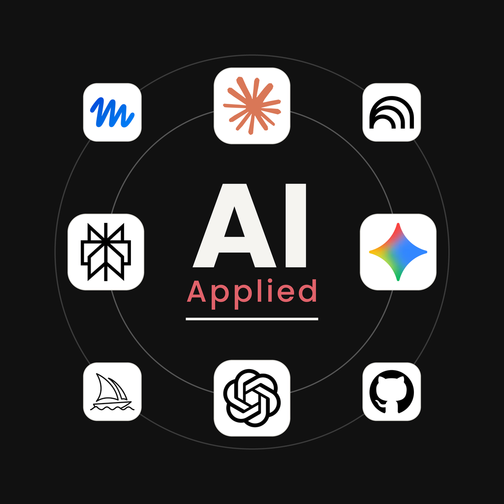

Terminal
A text window that controls your whole computer. It looks harder than it is. You'll run your first commands in week one.
AI Applied teaches Greenwich High students and faculty to use AI. Every session you build something real and walk out with a skill you can use the next day.

AI Applied is for students and faculty who want AI to be useful in their everyday lives. Every meeting you build something and leave with a skill you can use the next day, for school, creative projects, and the work you want to do after. There are no lectures. You bring the laptop, we bring a task, and you finish it before the bell.
Learn what ChatGPT, Gemini, NotebookLM, Perplexity, and Claude each do best, and how to get real work out of them.
Make a study tutor, a personal assistant, a creative piece, and a small web tool, with AI doing the heavy lifting and you steering.
Stop treating it as a novelty. Use it every day to study, make things, and work through problems.
No experience needed. These are the computer skills that make AI tools easier to use, and you'll pick them up as we go.
A text window that controls your whole computer. It looks harder than it is. You'll run your first commands in week one.
Where your files actually live. Organize your projects, stop losing things in Downloads, and find anything in seconds.
What does /Users/you/Documents actually mean? It's the address of a file, and it takes five minutes to learn to read one.
The ones everyone knows, plus the ones that actually save time. Copy, undo, switch apps, screenshot.
VS Code is where you write code. We'll get you set up and walk through the layout so nothing about it feels foreign before we build.
Right-click any website and look inside it. You can see exactly how it was built, and change it on your screen.
Twenty meetings in seven phases. Most stand alone, so you can join at any point and still leave with something. The plan may change once the school reviews it.
Accounts, prompts that work, and picking the right tool for the job.
Study kits, an AI tutor for your hardest class, and research with sources you check. AI as tutor and quizzer, never doing graded work.
An assistant tuned to your life, and one chore automated.
Images, design, video, audio, and writing.
Docs, Sheets, and Slides, interview practice, and how AI shows up in the jobs you want.
A web page AI helps you write, live on the internet.
Pick one piece, push it further, and show your portfolio.
Everything you make goes in your portfolio. By the end of the year it holds a personal assistant, a study system, a creative piece, and a live web tool.
We're picking a small leadership team to plan meetings, teach, and run the club's Instagram. Apply through a short Google Form.
We'll announce it on Instagram first. Until then, follow along to see what we're building.